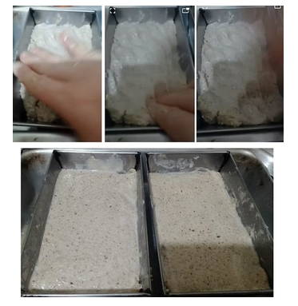
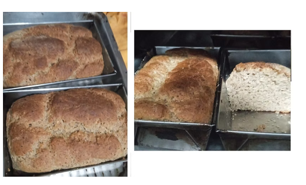
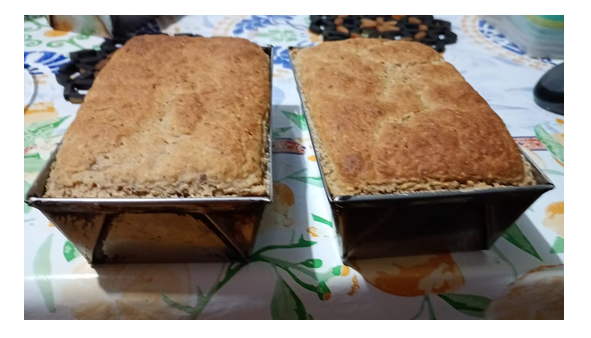
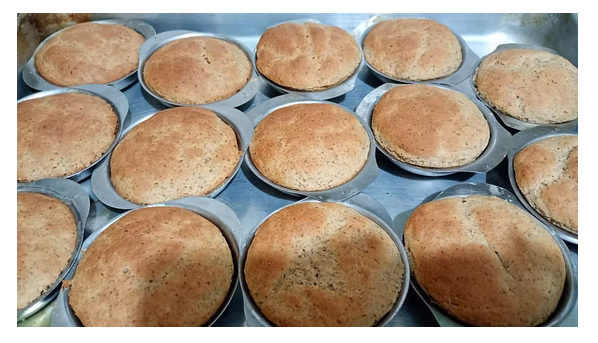
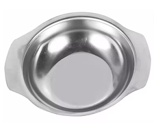
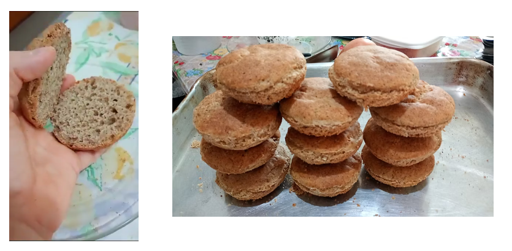

1: Pão de aveia
receita inteira


Para esse pão funcionar, por ser sem o glúten, é necessário ter extrema atenção às quantidades e forma de fazer, foque nas quantidades descritas em gramas e ml.
Ingredientes
- 15g - linhaça
- 5g - farinha de chia
- 5g - psyllium em pó
- 235g - farinha de aveia
- 30g - farinha de amendoim
- 5g - sal, de preferência rosa / Sal do Himalaia
- 35g - polvilho doce
- 100g - farinha integral de arroz
- 2,5g - goma xantana
- 15g - açúcar mascavo
- 10g - fermento para pão
- 2 UD - ovos
- 20ml - óleo
- 250ml - água
Passo 1
- 3 colheres de sopa (antiga perde seus benefícios) | (15g) - farinha de linhaça - moa na hora, farinha antiga perde seus benefícios;
- 1 colher de sopa | (5g) - psyllium em pó
- 1 colher de sopa | (5g) - farinha de chia
- 200ml de água quente | (5g) - farinha de milho
Misture os quatro ingredientes e deixe descansar uns 10 minutos, para que as farinhas absorvam bem o liquido;
Se não tiver os itens em farinha, basta bater as sementes todas junto no liquidificador, até dar o ponto de farinha.
Passo 2
Misturar os demais ingredientes secos
- 235g - farinha de aveia
- 30g - farinha de amendoim (Pode ser usado para substituir farinha de amêndoas, para quem não pode com amendoim, ambas dão bom resultado na massa, a diferença entre as duas, é que a de amendoim deixa mais macio e custa bem mais barato que a farinha de amêndoas *)
- 5g - sal, de preferência ao rosa/ Sal do Himalaia
- 35g - polvilho doce
- 100g - farinha integral de arroz
- 2,5g - goma xantana
- 15g - açúcar mascavo
- 10g - fermento para pão
* Caso falte qualquer uma das duas opções, pode usar farinha de aveia, essa mudança só vai deixar o pão um pouco mais seco.
Misture todos os ingredientes secos, colocando o sal separado do fermento no processo de mistura, pode colocar um no início o outro no fim.
3º passo
Misturar os itens do passo um com:
- 2 ovos
- 2 colheres de sopa de óleo de oliva ou outro de sua preferência – 20ml
- A mistura do 1º passo
- 50ml de água
Bata bem os ingredientes até ficarem homogêneos, use um fuê ou um mixer para facilitar, mas pode fazer com garfo;
Passo 4
Faça um buraco no meio dos ingredientes secos, após terem sido bem misturados, e coloque a mistura dos molhados.
Após misture, o melhor é bater na batedeira, força máxima usando a pá de pão por uns cinco minutos, garantindo que a massa toda receba o movimento das pás
Passo 5
Por em forma
Essa medida dá duas formas pequenas de tamanho 16cm x 10cm, fazer em forma grande uma quantidade maior de forma, dificulta o crescimento do mesmo, então naquelas formas mais comuns, que variam de 21cm a 28cm de comprimento, pode deixar o pão com mais dificuldade de crescer.
A massa vai ficar grossa, então não se assentará sozinha na forma, você deverá dar a forma com as mãos, umedeça os dedos em água morna e vai modelando (se não molhar os dedos eles vão grudar), para finalizar pode passar uma espátula de silicone (também úmida), para deixar bem reto, qualquer saliência que fique na massa vai danificar o crescimento.

Deixe crescer em forno desligado, que foi pré-aquecido, até quase dobrar o tamanho, se a massa ficar abaixo da metade da forma, ele não vai crescer até passar o ponto, precisa deixar só até quase dobrar de tamanho.
Esse processo de crescimento é o mais delicado, o pão sem glúten não vai continuar crescendo enquanto assa, como ocorre com o pão de trigo, então o ponto que iniciar a assar, será o que ficará.
Deixe assar por 21 minutos, às uns 180°C, dependendo do forno pode variar, mas o tempo é igual o que usaria para pão de trigo.
Nem sempre ele cresce nesse formato arredondado, é mais comum seguir exatamente o formato da forma.

Deixe esfriar e desenforme. Bom apetite!
---
Se pão murchar no meio, tende a ter errado na proporção de água e secos, com a medida que está na receita, normalmente se precisa de uns 10ml a mais, mas isso vai depender do tamanho do ovo, por isso ao terminar de por os 50ml do passo 5, avalie se não ficou seca a massa, ela deve ficar rígida, mas úmida, normalmente não precisa desses 10ml extra.



Para pães em formato redondo, usei forminhas de inox, normalmente usadas para sobremesa - tamanho 9 x 10 x 2 cm
